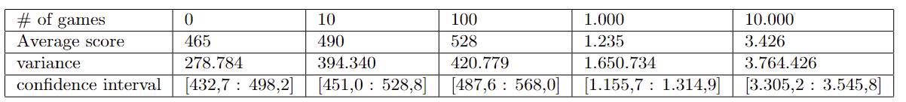

This blog is about the game Pac-man's mechanics, the essential mechanic of avoiding a ghost in a maze. It is relevant, because if we can get an Ai to solve one mechanic of a game then we can build an Ai to solve multiple mechanics and problems. In this blog we have chosen to research, how well a deep-Q-network Ai can survive a single ghost dependent on different amounts of learning. Both the ghost and Ai agent will spawn in random locations and the ghosts movement is random as opposed to the real Pac-man game. How much does an Ai improve if it has more training? We did 1.000 games test with 0, 10, 100, 1.000, 10.000 games of training. The Ai improved a lot and went from an average score of 465 with 0 training games to an average score of 3426 with 10.000 training games. We analyzed with basic statistics to differentiate between the levels of learning. We can conclude that the more training the Ai got, the better it got at the game.
Introduction
Most people are familiar with the classic arcade game "Pac-Man," where you control a yellow circle/pizza through a maze, being chased by ghosts. The goal is to eat all the pellets/fruits in the maze, and completing a level once all pellets are consumed. Touching a ghost results in being eaten, and you have to start over. Pac-Man is an old game, a well-known icon in video game history. Its simple 2D structure, clear opponents, and objectives make the game iconic. The blog aims to create an AI to play Pac-Man or a simplified version, initially considering Q-iteration but moving to Deep Q Learning due to complexity, simplifying the game to a fixed maze, random ghost actions, and no pellets/fruits. It investigates whether the AI performs better with a higher number of training games, measured by average score over 1,000 games and improvement with more training games, using means and confidence intervals.
Methods
We have chosen to use deep reinforcement learning through deep Q-learning to teach our agent to simulate playing a Pac-Man-like game. This is achieved using a neural network that continuously updates its parameters to make the theoretically best choice. The game board is fixed, with a ghost making random moves. Our agent uses its position and the ghost's position as input. To simplify the game, we constructed the maze as a matrix where a move goes to a neighboring field, unlike our first attempt where it moved one step per frame. We found the coding for AI and the Pac-Man game online, utilizing coding from our teacher Mikkel for both the game and the AI.
We investigate how it performs after being trained on 0, 10, 100, 1,000, and 10,000 training games to see its learning curve. Each training set starts with randomness at 100 percent, known as epsilon = 1, decreasing with 1/number of training games. This gradual decrease makes the agent transition from "curious" to more decision-conscious. After each training, we test with 1,000 games, collect scores, calculate the average score for 1,000 games, and find the variance. This is to distribute randomness and identify trends.
Our AI consists of 2 layers: a hidden layer and an output layer. The hidden layer takes 4 inputs: the agent's x and y positions and the ghost's x and y positions, distributing the input to 256 neurons, then to 4 outputs: up, down, right, left. The agent chooses the best action unless the exploration variable, epsilon, is greater than a random number between 0 and 1. We chose a batch size of 128 and a buffer size of 100,000, overriding after 100,000 steps. We use the SGD optimizer instead of Adam, based on a pilot test, and MSE (Mean Squared Error) as the loss function.
We chose deep Q-learning due to the large state space of 4624, with 68 possible positions for both the agent and ghost. After training, data is saved as a state dictionary in a .pt file, then loaded for 0, 10, 100, 1,000, and 10,000 training data and tested with 1,000 games.
We perform statistical calculations to evaluate the AI agent's performance across different training periods, plotting scores and variance against the number of games on a logarithmic x-axis and calculating confidence intervals to identify clear improvements, indicated by minimal overlap between experiments.
Results
In the experiment, we trained our AI by having it play 0, 10, 100, 1,000, and 10,000 training games on a simplified track we created ourselves. In each training set, they started with an epsilon of 1, which decreased by 1/number of games played. The AI trained on 0 games served as our control AI, untrained and taking random actions, used to determine if our AI learns. Each AI plays 1,000 times with a game length limit; it can score up to 5,000 points, restarting upon reaching this score. Points are awarded for each action to reduce training time.
Based on the confidence intervals, we observe that our AI does not learn sufficiently from 10 or 100 training games, evidenced by their confidence intervals overlapping with that of our control AI, which took random actions. However, the confidence intervals for the 1,000 and 10,000 training games indicate that our AI has learned enough to significantly outperform our control AI. Thus, we have demonstrated that our AI improves with more training, confirming our hypothesis.
Discussion
In the initial version of their Pac-Man game and Deep Q network, the researchers found it necessary to simplify the game. They reduced the number of ghosts chasing Pac-Man from four to one due to difficulties in training the AI even after 10,000 games. The original version of Pac-Man, designed for human players, proved challenging for AI training. Thus, they shifted to a version where the AI/player's sole objective was survival, simplifying the maze and allowing the ghost to move randomly.
Through training, a clear upward trend in performance was observed, particularly with the AI that played 10,000 games, achieving the maximum score of 5,000 points more frequently towards the end. The model trained with 10,000 games achieved 507 perfect games, significantly more than the model trained with 1,000 games, which only played perfectly 26 times. A linear relationship was found between the number of training games and the test game scores, suggesting that the AI theoretically needs to be trained on 15,203 games to consistently score 5,000 points per game.
A linear trend was also noted between the number of games played and the variance in scores, indicating that more training leads to higher scores but also to greater variance. This suggests that with sufficient training, the AI could learn to avoid poor performances, potentially reducing variance to zero and consistently achieving high scores.
The conclusion is that it's possible to train an AI with deep Q-learning to play perfectly by evading the opponent with more extended training. The future of AI research holds great promise, with major companies like Google and OpenAI exploring how AI can improve our world.